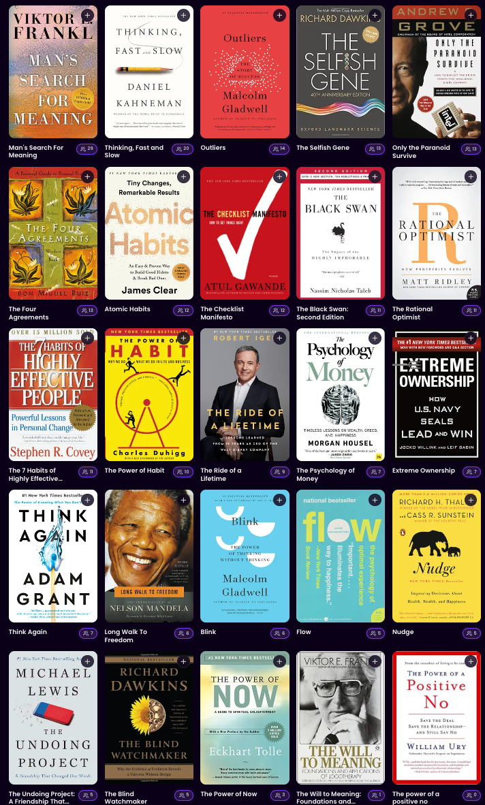

01 / Autonomous driving
DriveLM Graph Reasoning
Tests whether graph-connected perception and prediction context improves a VLM’s planning answers compared with a front-camera image alone.
I combine mechanical engineering, business, and artificial intelligence to work across research, engineering, and product decisions. My work explores computer vision, multimodal models, graph reasoning, and efficient AI deployment.
A few projects, experiments, and repos. Each one is a small proof of how I think and build.
Tests whether graph-connected perception and prediction context improves a VLM’s planning answers compared with a front-camera image alone.
Tests whether LoRA-based recovery can restore the structured tool-calling abilities lost when language models are aggressively quantized.
Compares Faster R-CNN, YOLO11s, and DETR across COCO and KITTI, with a technical report focused on transfer and speed–accuracy tradeoffs.
From-scratch experiments comparing RNN, GRU, LSTM, and Transformer language models, including context length and attention-head analysis.
Where I’ve applied engineering, product thinking, and operational judgment in real organizations.
Reduced operational error rates by 78% and MTTR by 30% through decision frameworks, telemetry, and cross-functional product work.
Used predictive maintenance and IIoT telemetry to cut equipment downtime by 60% and save $1.2M annually.
Applied consultative diagnostics and technical product knowledge to improve equipment selection and customer outcomes.
Longer-form work where I investigate a question, define an experiment, and study the tradeoffs.
Uses scene importance rather than visual entropy to allocate fixed compute toward vulnerable road users in generated driving scenes. The project combines a SmallDiT study with LoRA fine-tuning of Stable Diffusion on Cityscapes layouts.
Pairs a LightGCN ranker with Neo4j graph evidence and grounded LLM explanations. On MovieLens-1M, X-KGRank reaches NDCG@10 = 0.2956, a 17.1% improvement over a popularity baseline.
The details that make the work easier to understand.
I bring together a background in mechanical engineering, business, and artificial intelligence. I enjoy learning across disciplines and turning complicated ideas into clear, practical systems.
My current interests include computer vision, autonomous systems, multimodal models, graph reasoning, and efficient AI deployment.
The ideas I return to, and the activities that keep me moving.

I read widely across psychology, meaning, habits, leadership, money, and decision-making. These books often shape how I approach technical and human problems.
I enjoy being outdoors, especially hiking, cycling, and running. I have completed a 200 km BRM and run a sub-25-minute 5K—a reminder that endurance is built one steady section at a time.